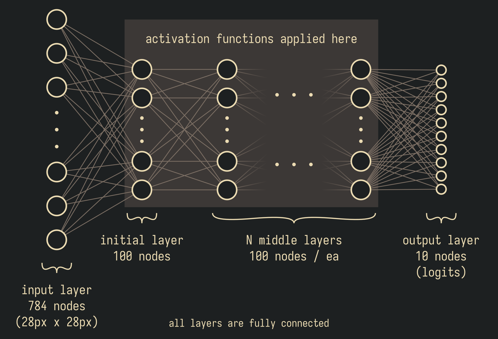
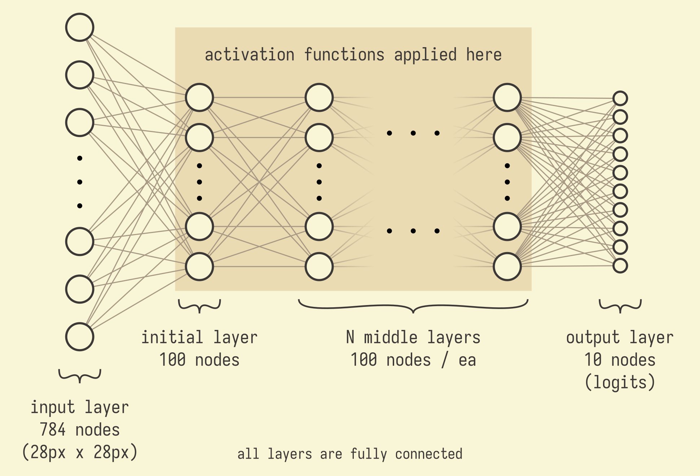

Introduction
Deep Learning is full of choices:
- What architecture to pick?
- What loss function?
- What learning rate?
- What activation functions?
- ...and so on.
And many words have been spilt across the internet about all of these, but rarely are those words backed up with data.
That is what we're doing here.
We're starting with a simple dataset that everyone should be familiar with: MNIST, and we'll be testing everything we can think of, and posting the results here. More data. Less fluff.
In particular, we'll be presenting results in terms of Accuracy (out of 100% on the validation set) vs FLOPs spent on training. This later is a twist compared to the usual practice of counting training batches, but when different architecture choices may involve substantially different computational costs, it's important to have an apples-to-apples comparison.
Depth of Architecture
SimpleNet2 with varying number of 'middle layers'
Methodology
Philosophy: Our philosophy is to start with the simplest and easiest things we can do first, and iterate from there.
FLOPs: We report our results in terms of FLOPs spent on training--rather than batch number--because it gives a more fair comparison between different model architectures. We obtain our FLOPs numbers by using the PyTorch Profiler tool, which produces FLOPs estimates that so far have landed spot on compared to every "by hand" calculation we've done.
Training: All of our training is done on the MNIST training set, as loaded from the Hugging Face: Datasets python module. This dataset has 60k images, each ot 28x28 px, and each corresponding to a single digit, 0-9. During training, each model is first initialized and trained for one epoch. This epoch is timed. The model is then re-initialized and trained for a number of epochs corresponding to ~4 hours on a desktop computer that we have running in the background with an NVIDIA 3070 RTX graphics card. Accuracy on the validation set is recorded after each epoch of training.
Validation & Test: MNIST includes a 'test' dataset of 10k labeled images. We further split this up into an 8k "validation" set (which is used to generate the "Accuracy" axes in all our figures, except where otherwise noted), and a 2k "test" set (which we reserve for special use).
Batch Size: All models are trained at a default batch size of 100 items, unless otherwise noted.
Optimizer:All models are trained using the torch.optim.SGD optimizer, unless otherwise noted. We use pytorch defaults for all kwargs unless otherwise noted.
Learning Rate:All models are trained using a learning rate of 1e-3, unless otherwise noted.
Loss Function:All models are trained using cross entropy loss, unless otherwise noted.
Random Seed: To ensure repeatability, we use the taxicab number as our random seed, except where otherwise noted.
Model Architectures
SimpleNet2


SimpleNet2 is the simplest possible neural net capable of hosting an activation function.
In the base variant, which is the one used, for example, in the activation functions investigation, N = 0. Which is to say that in the base variant, there are no "middle" layers, and the model consists of just a single, fully-connected, layer of 100 neurons in between the input pixels and the output logits.
In the depth of architecture investigation, N is set to different values, as labeled in the graph legends. For example, "m_SimpleNet2_ReLU" refers to the base model, with no middle layers, and using the ReLU activation function. "m_SimpleNet2_3layers_ReLU" refers to the SimpleNet2 model with three middle layers (so a total of 4 fully-connected layers... 1 initial + 3 middle), with all layers using the ReLU activation function.
LeNet5
LeNet5 is a re-implementation of the original LeNet-5 neural net.
About
MNIST battleground is a repository of actual tests of deep learning techniques applied to, and compared on, accessible datasets. In particular, since different choices (of, e.g., activation function, NN architecture, hyperparameters, etc) lead to different computational costs, we will be comparing options by recording validation-set-accuracy vs FLOPs used during training.
Credit and Thanks
First off, credit and thanks go to everyone who has come before us, both great and small. Deep Learning is a fascinating space, and every contribution, from groundbreaking papers that usher in new eras, to humble blog posts that educate on one point or another, is noticed and valued.
This site uses the Iosevka font, Normalize.css, and a remixed variant of Simple.css using the gruvbox color scheme.
Contact
Feel free to reach us by email at battleground@mnist.org.